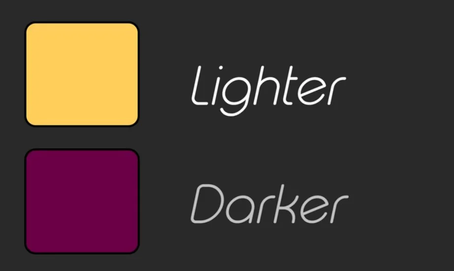
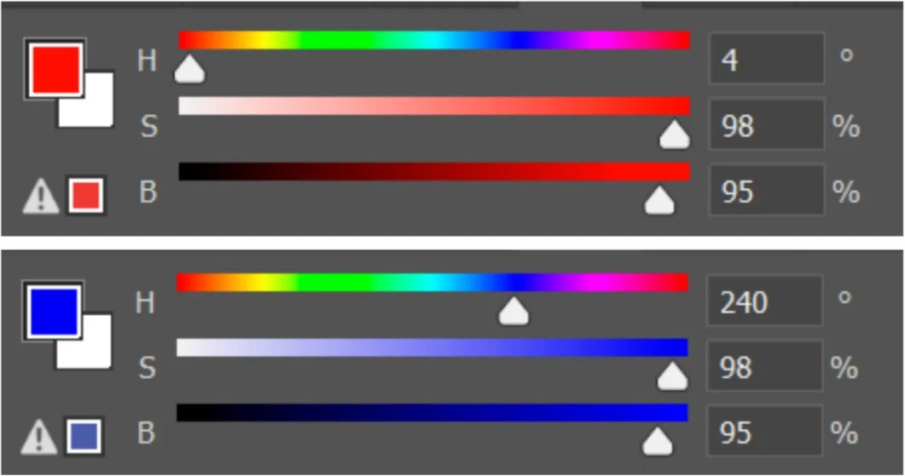
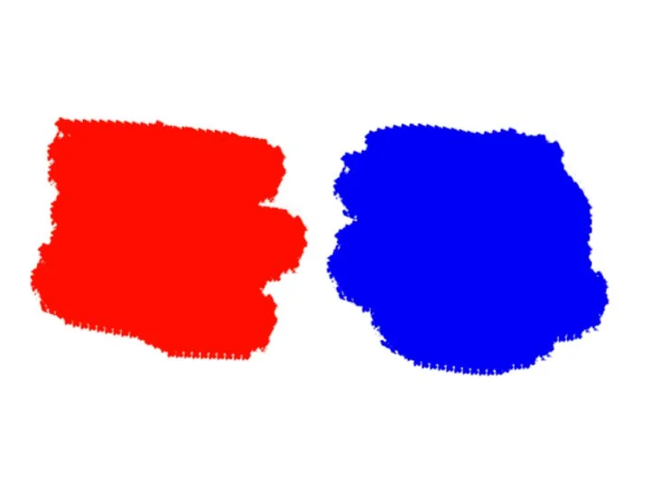
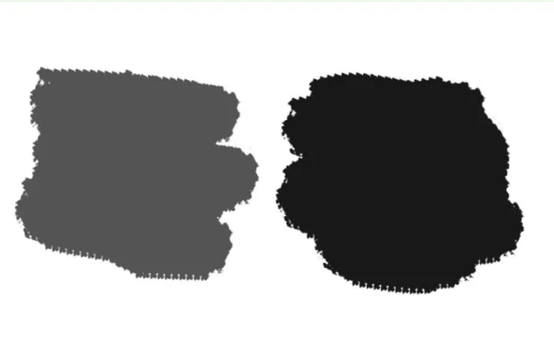
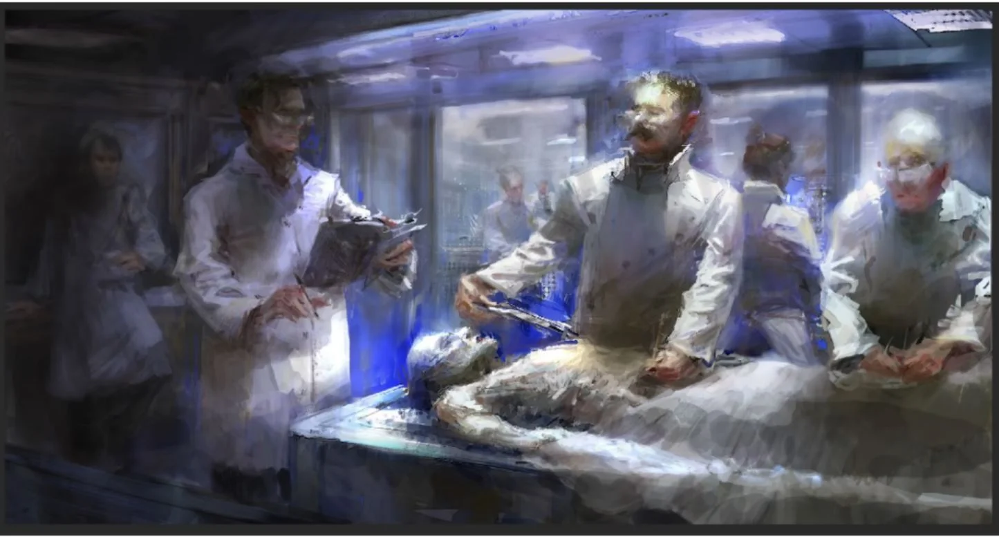
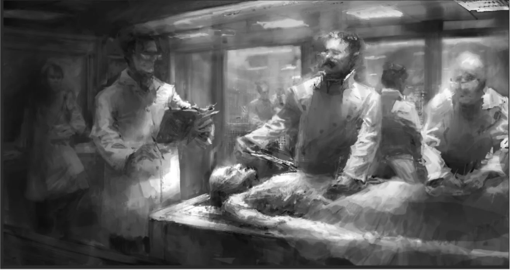

Hvad er farveteori?
Farveteori spiller en afgørende rolle inden for visuel kunst, herunder grafisk design, malerier, fotografi, mode og meget mere. Farveteori kan anvendes til at skabe effektiv visuel kommunikation, da farver har evnen til at skabe følelser. Den kan hjælpe os med at forstå, hvordan farver kan kombineres og interagere, hvordan de kan påvirke os følelsesmæssigt, og hvordan vi bedst kan anvende dem til at formidle eller understrege et budskab. For at forstå farveteoriens grundprincipper er der nogle hovedområder inden for farvecirklen, som vi skal lære for at kunne implementere farver på en effektiv måde i vores kunstværker.
Farvecirklen indeholder:
Primærfarver: rød, blå og gul befinder sig i centrum af cirklen. Disse farver kan ikke skabes af andre farver.
Sekundærfarver: består af lilla, grøn og orange. Farverne opstår ved at blande to primærfarver sammen. F.eks. rød og blå giver lilla. Blå og gul giver grøn. Gul og rød giver rød.
Tertiærfarver: er cirklens yderste farver. Disse farver opstår ved at blande primærfarver sammen med sekundærfarver.
Hvad er komplementære farver?
Man kan finde de komplementære farver ved at tegne en streg fra den valgte farve over til den modsatte side af farvehjulet. F.eks. er rød en komplementærfarve til grøn. De to farver er modsatte for hinanden og skaber kontrast, når de stilles ved siden af hinanden.
Hvad er farveharmoni?
Det kan fx være en analog farvepalet, hvor det er farver, der ligger tættest på hinanden på farvecirklen. Analog farver skaber en blød fælles tone og kan dermed give en sammenhængende effekt.
Hvad er farvesymbolik?
Farver har en evne til at vække følelser, idet de kan inddeles i kølige og varme toner. De varme farver som rød, orange og gul, vækker typisk associationer med styrke, energi og glæde. På den anden side kategoriseres farver som ligger tættere på blå, som kølige farver, og disse forbindes ofte med intelligens, afslapning og stablitet.
Hvad er hue, saturation og value?
Hue
Hue er de centrale farver i et spektrum, hvilket skal betyde at hue beskriver de rene farver, hvor lys og mørke farver ikke er indblandet. Det er i bund og grund farver som rød, gul, blå, grøn osv. Hue måles i grader i et farvehjul eller i længde fra 0 til 360 grader. Hvor 0 og 360 repræsentere farven rød, mens 120 grader er grøn, og 240 grader er blå.
Saturation
Saturation definerer intensiteten og matheden af en farve. Når en farve har høj saturation, betyder det, at den er dyb og fuldt mættet med farve. Modsat, når farven har lav saturation, mister den sin intensitet og kan virke mere bleg eller gråtonet.
Value
Value definere hvor mørk eller lys en farve fremstår, fra sort til hvidt.
Farvernes påvirkning på value
Det er vigtigt at forstå, at farver kan have betydning inden for lysstyrke (value). Kunstneren, Marco Bucci, i sin Youtube video om farver. I videon forklarer Marco om, at "farver altid er tilknyttet til value.""
De følgende billeder tilhører Marco Bucci. 
På billedet ovenover vises to farver: gul og lilla. Selvom vi ikke ved hvor de to farver befinder sig på value-skalaen, så er det stadig nemt for os skelne mellem det lyse og den mørke farve på den gule og lilla farve.

Når man fjerner farverne ved at bruge grey skalaen, kan man se at gul står som det lyse i toppen og lilla i bunden, som det mørke. Men det er ikke altid nemt at skelne mellem farver, og se hvor de befinder sig på value skalaen.
 Billedet øverst viser to farver: rød og blå i samme lysstyrkeværdi. Kan du gætte, hvilken af de to farver der ser lysere eller mørkere ud?
På billedet ovenover ses den røde og blå farve, som er blevet konverteret til sort og hvid, hvor den blå farve fremstår mørkere end den røde. Dette viser, at forskellige farver med samme lysstyrkeværdi kan have forskellige toner. Marco Bucci påpeger, at "value er en af de vigtigste grundlæggende elementer inden for billedkunst, og uanset hvad du gør med hue og saturation, vil dine resultater i sidste ende afhænge af værdierne.
Det er derfor en god ting at kende til hvilke farver, der kan have forskellige values. Du kan bruge Marcos’ skabelon nedenunder som en guide til dine værkere, når du nu skal i gang med at farvelægge.
Et eksempel på anvendelsen af denne farveteori findes i et maleri af Marco Bucci. Her kan man tydeligt se, hvordan han har brugt denne farveteori i sit værk:.
 Marco har brugt mange grålige farver i dette maleri. For at fremhæve midtpunktet i sit billede valgte han at bruge farven blå, da han ved, at farven giver nogle af de mørke værdier, når farven bliver konverteret til sort-hvid. Ved at bruge farveteorien kunne Maro opnå en dybere kontrast mellem baggrunden og personen der ligger på bordet.
Billede fra kunstnerens instagram profil